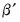
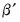

|
|
|
“Var Data Members” provides a complete list of data members that are available for a VAR object, but here, we focus on retrieving some of the VEC specific results.To access the estimates of the full B matrix of coefficients, you may use the @cointvec data member:The estimates of the adjustment coefficients A may be obtained using the @cointadj data member:or directly using @cointlr,To see the correspondence between each element of A, B, and C and the estimated coefficients, you may select View/Representations from the VAR toolbar.
 , B contains the cointegrating vectors , and C holds the short-run parameters (the coefficients on the lagged first difference terms).
, B contains the cointegrating vectors , and C holds the short-run parameters (the coefficients on the lagged first difference terms).  .
.